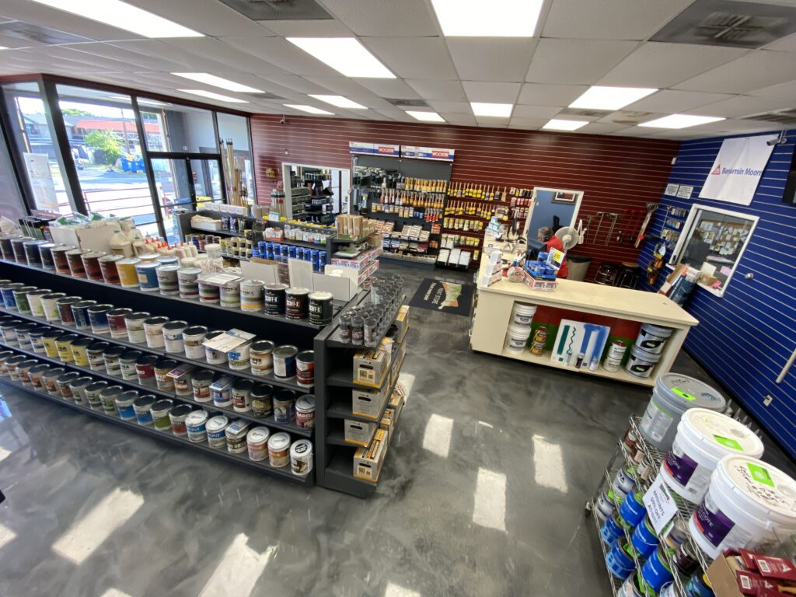
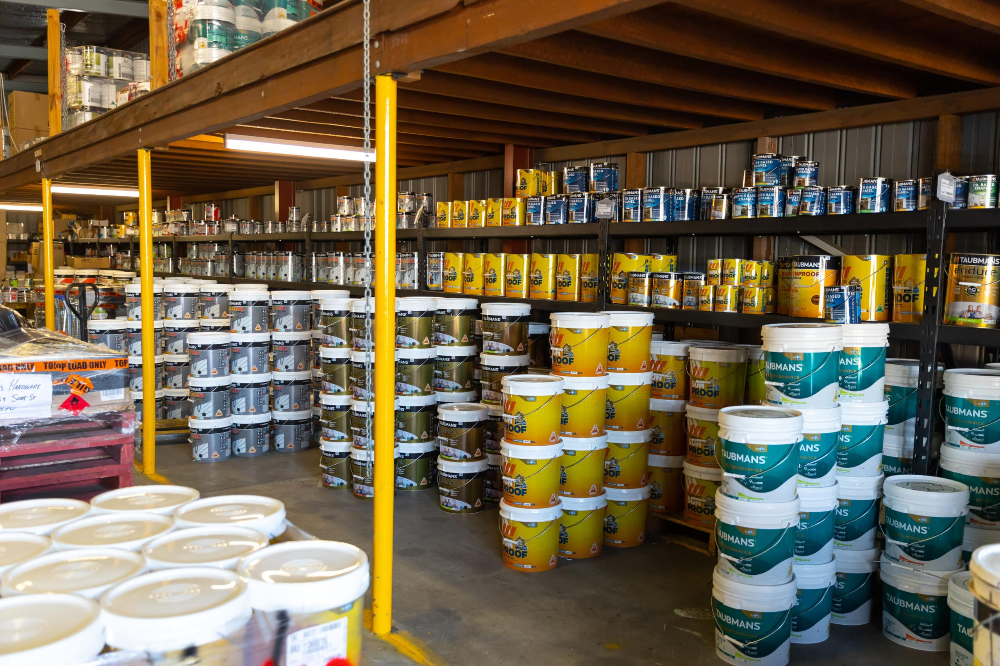

Rólunk
Bemutatkozás
Üdvözöljük a Barkácsbolt Kft.-nél! Webáruházunk 2010-ben indult azzal a céllal, hogy minőségi barkács- és építőanyagokat kínáljon ügyfeleinek versenyképes áron. Kínálatunkban megtalálhatóak a legjobb faanyagok, festékek, valamint kézi és elektromos szerszámok, amik segítenek abban, hogy minden projektje sikeres legyen.
Célunk, hogy ügyfeleink számára egyszerű és élvezetes legyen a barkácsolás és építkezés, bármilyen szintű szakértelemmel is rendelkezzenek. Tapasztalt szakértőink mindig készen állnak segíteni tanácsokkal és ötletekkel.
Történetünk
A Barkácsbolt Kft. története egy apró, családi tulajdonú boltban kezdődött, Budapest szívében. A 2000-es évek elején, amikor még az internetes vásárlás gyermekcipőben járt Magyarországon, mi úgy döntöttünk, hogy egy webshop létrehozásával szeretnénk kényelmesebbé tenni az építőanyagok és barkácseszközök beszerzését. Kezdetben kis lépésekben haladtunk, de 2010-ben megnyitottuk első online áruházunkat.
Az évek során rengeteg változáson mentünk keresztül. A webshop folyamatosan fejlődött, termékkínálatunk bővült, és mára az ország egyik legkedveltebb online barkácsboltjává váltunk. Hisszük, hogy a kemény munka és az ügyfeleink iránti elkötelezettség volt a sikerünk kulcsa.
Kép: Az első boltunk 2005-ben
Kép: A webshop indulása 2010-ben
Kép: Modern raktárunk, ahonnan ma a termékeinket szállítjuk
Csapatunk
A Barkácsbolt Kft. mögött álló csapat lelkes és tapasztalt szakemberekből áll. Akár vásárlói támogatás, akár szakmai tanácsadás, mindig rendelkezésére állunk. Büszkék vagyunk arra, hogy családias hangulatot árasztunk, miközben professzionális szolgáltatást nyújtunk ügyfeleinknek.
Néhány kollégánk, akik nap mint nap azon dolgoznak, hogy a legjobb szolgáltatást nyújtsuk:
- Kovács Péter - Ügyfélszolgálati vezető
- Nagy Ágnes - Termékfelelős
- Szabó Gábor - Raktárvezető
- Tóth Anikó - Webáruház menedzser